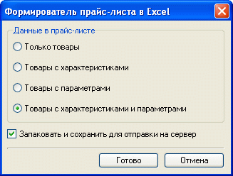
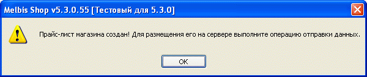

Из главного окна Melbis Shop выбором пункта меню "Утилиты - Прайс лист в Excel - Формирователь прайс-листа в Excel" вызывается окно формирователя. Управление сводится к указанию полноты данных, включаемых в прайс. Опция "Запаковывать и сохранить для отправки на сервер" вызывает подготовку прайс-листа и запаковку его в файл "price.zip", который затем может быть отправлен на сервер и размещен по адресу типа www.shop.com/files/price.zip. Если указанная опция не выбрана, прайс-лист откроется для отображения в окне Excel.

В случае успешного выполнения формирования прайс-листа появляется уведомление:

Следует учесть, что по-умолчанию в Excel опция "Доверять доступ к Visual Basic Project " не выбрана, что может при попытке формирования прайс листа в Exsel привести к появлению сообщения "Программный доступ к проекту Visual Basic не является доверенным". В этом случае необходимо в Excel зайти "Сервис - Параметры... - Безопасность - Безопасность макросов... - Надежные издатели" и установить опцию "Доверять доступ к Visual Basic Project ".